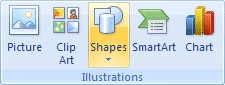
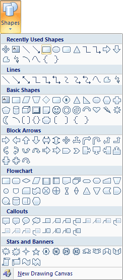
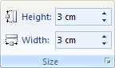
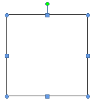
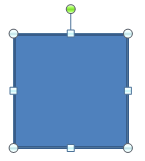
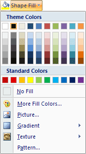
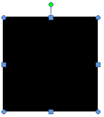
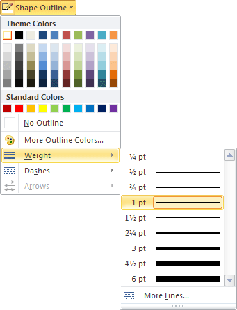

Free
computer Tutorials
|
Free
computer Tutorials
|
|
 home home |
|
|||||
Microsoft Word 2007 to 2010Word Shapes - A LogoIn this section you'll learn all about Shapes. You'll use them to produce the following logo: Start a new document for this, and save it with an appropriate name. Give yourself some space on the page by holding down the enter key on your keyboard. Let go when about half way down the page. This will make it easier to drag things around.
Now let's get started. We'll do the T first. The Shapes are all on the Insert tab on the Word ribbon, so click this to select it. Now locate the Illustrations panel and the Shapes item:  Click the Shapes item to see the following list of shapes:  The one we want is the rectangle, which is under the Basic Shapes heading, the second one along. (In Word 2010 there is a separate Rectangles section.) Click the rectangle shape to select it. Now move your mouse pointer to your blank page. The pointer should change to a large cross. Hold your left mouse button down. Keep it held down and drag outwards. Let go when you have a rectangle. You should notice a new tab appear in the Word ribbon, the Format tab. As its name suggests, this tab is used for formatting your shapes. You can change the size of your rectangle via the Size item on the Format panel. It only has two items, Height and Width:  Click the small arrows on the Height and Width and change them both to 3 cm. (Use 1.18 if your sizes are in inches.) Your shape should then look like this in Word 2007:  In Word 2010, however, the shape will look like this:  Notice the sizing handles around the shape in both versions. (If you can't see them, click your shape to select it.) The square ones change the height and width, while the round ones scale the shape. The green round circle at the top is used to rotate the shape. You can change the colour of a shape by using a Fill. To do that, locate
the Shape Styles panel on the Format tab. Now click the Shape Fill item
to reveal a list of colours: 
Select black for the fill colour and your shape will look like this:  In Word 2010, if you have a blue border around your rectangle, click the Shape Outline item to reveal a colour menu. Change it to black. You may also need to change the weight of the outside lines, because the default is set to 2. This gives you slightly rounded corners. To change the weight, again click on Shape Outline, then the Weight item. Change it to 1 pt: 
We'll continue with the logo on the next page below. Continue with the Shapes Tutorial --> <--Back to the Word Contents Page View all our Home Study Computer Courses
|
||||||
|